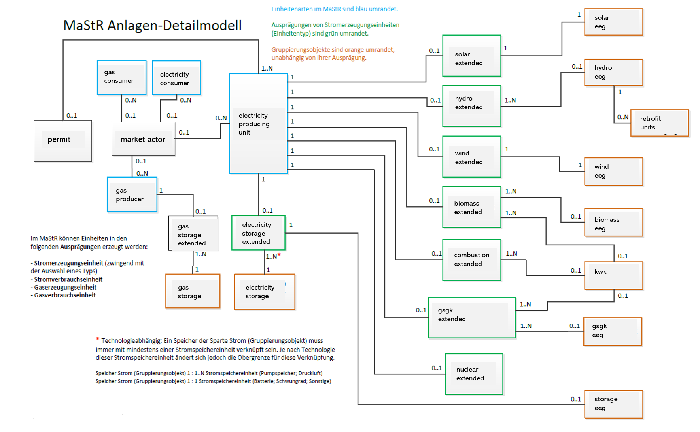

Background
The Marktstammdatenregister (MaStR) is operated by the German Federal Network Agency (de: Bundesnetzagentur, short: BNetzA) since January 31, 2019 as a central online database for data related to the German energy system. Owners of electricity or gas generating plants are obliged to report master data on themselves and their plants. Additionally, plants consuming large amounts of electricity have to be registered if they are connected to at least a high-voltage electricity grid.
Most information on units is openly accessible. The data is published under an open data license, the Data licence Germany – attribution – version 2.0 (DL-DE-BY-2.0) and can be downloaded, used and republished with no restriction if proper attribution to the Bundesnetzagentur is given. For units with a net capacity of up to 30 kW, some location information is restricted from publication. This applies to street name, house number, parcel designation and exact coordinates of units. The most granular location information accessible for all units is the postal code or the municipality.
Within our paper Analyzing Data Reliability in Germany's Energy System: A Validation of Unit Locations of the Marktstammdatenregister we give further insights into the content and quality of the dataset.
Content
The German Federal Network Agency regularly updates the dataset and adds new tables and attributes. Hence, the primary resource of information about the dataset should be the original website:
- Get information about the
bulkdata here (in german) - Get information about the
APIdata here (in german)
Difference between bulk and API dataset
As you might have noticed, we distinguish between bulk and API datasets. With the bulk dataset we mean the data obtained from the zipped xml-files downloaded from here using the Mastr.download. The API data is obtained by requesting information via the SOAP-API and the soap_api.download.MaStRDownload module.
Why is the table structure in the open-mastr database as it is?
The structure of the database is historically determined by the data retrieved via API. (open-mastr existed before the XML-dump was provided).
See MaStR data model
Why does the XML table structure and some column headers are different to the data retrieved via API requests?
The difference in structure might stem from zipping the data to XML.
The reason for difference in column
header naming is unknown to us. However, open-mastr maps XML-dump columns to API columns.
Tables in the database
Confused by all the tables?
 We regularly run the whole download and cleansing pipeline and upload the dataset as csv files at zenodo!
We regularly run the whole download and cleansing pipeline and upload the dataset as csv files at zenodo!
After downloading the MaStR, you will find a database with a large number of tables. Here we give a brief overview of what you can find in those tables:
How are the database tables created from the XML files?
FIXME: link to bulk reference
How are the csv files created from the database tables?
FIXME: how to link to Reference section?
_extended tables
The main information about the different technologies lies in the _extended tables. You can find the capacity, location, and other technology-specific attributes here.
| _extended tables | Comments |
|---|---|
| biomass_extended | |
| combustion_extended | Conventional powerplants: Gas, Oil, Coal, ... |
| gsgk_extended | gsgk is short for: Geothermal, Mine gas, and Pressure relaxation |
| hydro_extended | |
| nuclear_extended | |
| solar_extended | |
| storage_extended | |
| wind_extended |
_eeg tables
In germany, renewable energies were subsidized by the state - according to a law called 'EEG'. Relevant information like the 'EEG ID' are in the _eeg tables.
| Tables in the database | Comments |
|---|---|
| biomass_eeg | |
| gsgk_eeg | gsgk is short for: Geothermal, Mine gas, and Pressure relaxation |
| hydro_eeg | |
| solar_eeg | |
| storage_eeg | |
| wind_eeg |
Other tables
Other tables contain information about the grid, the energy market, or gas consumers and producers:
| Tables in the database | Comments |
|---|---|
| balancing_area | Related to the energy market |
| electricity_consumer | Only large consumers |
| gas_consumer | Only large consumers |
| gas_producer | |
| gas_storage | |
| gas_storage_extended | |
| grid_connections | Does not contain geoinformation |
| grids | Does not contain geoinformation |
| locations_extended | Connects units with grids - to get coordinates of units use the _extended tables |
| market_actors | |
| market_roles | |
| permit | |
| storage_units | |
| kwk | short for: Combined heat and power (CHP) |
MaStR data model
A useful overview of the MaStR data model can be found here (in german). A translated version using the names from the tables you can find in your local database is presented here:
